В макетах используются только Montserrat, Open Sans, Tinos (Times-Roman) и Sovest. Там, где в CSS стоял вес, которого нет в файле шрифта, браузер дорисовывал жирность сам. Ниже — шесть исправлений: слева «до», справа «после»; где есть исходный макет — он третьим кадром.
В разметке стоял font-weight: 700, а у Montserrat есть только 400, 500 и 600. Браузер брал 600 и дорисовывал жирность сам. Теперь 600 — настоящий SemiBold.
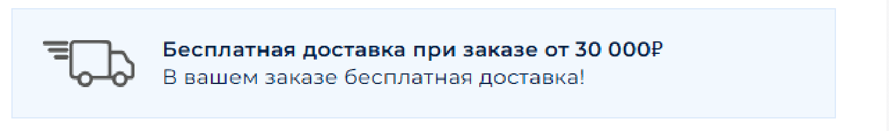
По PSD первая строка (название бренда) — SemiBold, остальное — Medium. Было всё 600; стало 500, а первая строка через ::first-line — 600. В HTML бренд стоит первой строкой через <br>.
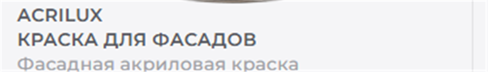
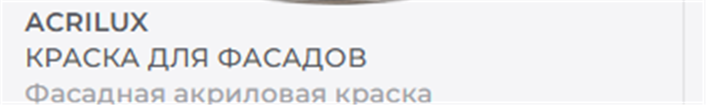
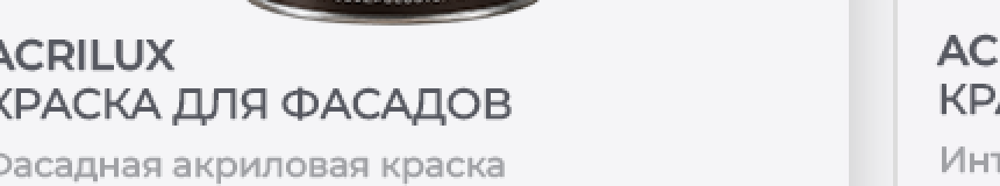
В макете это Times-Roman Regular. Tinos — метрический клон Times и существует только в весе 400; стоявший 600 браузер дорисовывал. Теперь 400.
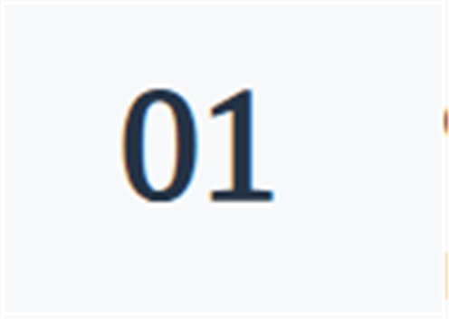
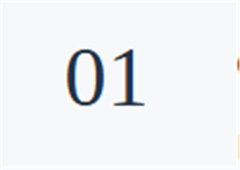
У Open Sans нет веса 500, поэтому прежний 500 у названий строк браузер тихо показывал как 400 — названия не отличались от значений. Теперь названия 600, значения 400, как в макете.
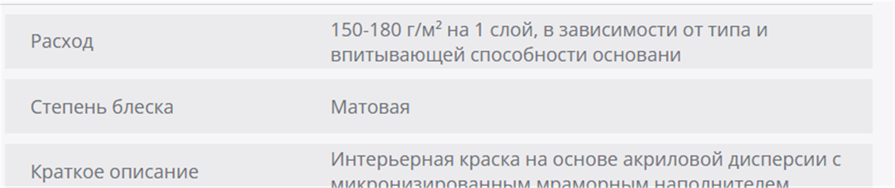
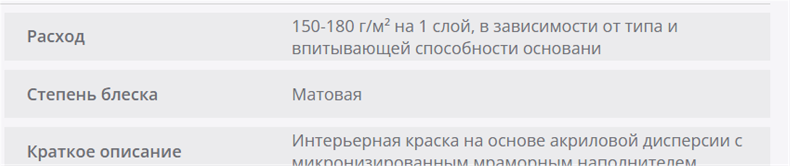
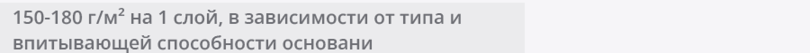
В макете это Open Sans SemiBold, а стоял Montserrat 500 — веса нет, показывался 400, да ещё и чужой гарнитурой. Замер по растру макета: 329 / 339 / 57 px на строку; с поправкой на масштаб 0.9 цель — 296 / 305 / 51. Open Sans 600 при 14 px даёт 301,3 / 309,5 / 54,0 (совпадение), прежний вариант — 279 / 287 / 49 (на 5–6 % уже). После правки блок 310 px, ровно три строки, высота 51 px.
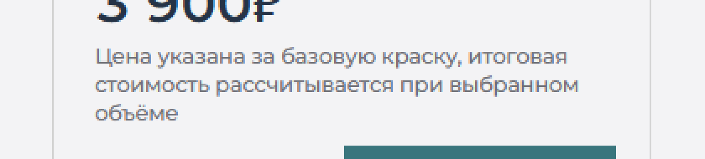
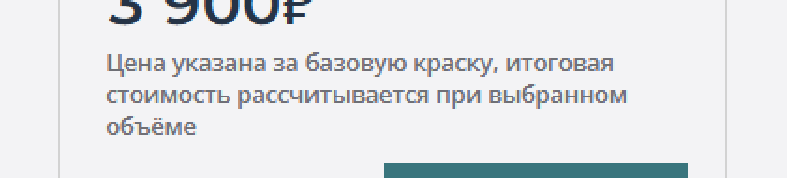
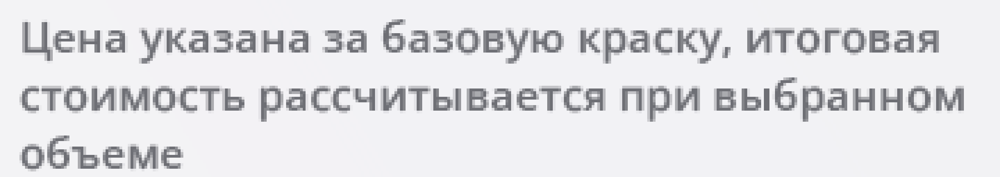
Текст был обёрнут в <b> и получал синтетический жирный. В макете вся плашка набрана одним весом — теперь обычный 500.
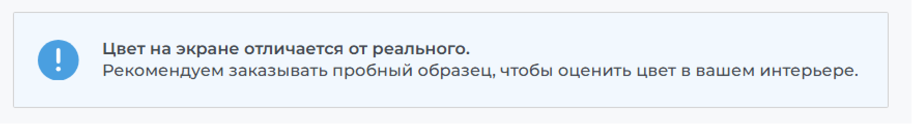
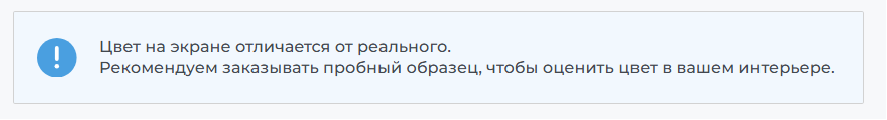
В css/base.css добавлено font-synthesis: none: браузер больше не дорисовывает ни жирность, ни курсив ни для одного элемента сайта.
| Страница | 1920 | 2560 | Высота на 2560 |
|---|---|---|---|
| Товар | до / после | до / после | 1292 px |
| Цвет и материалы | до / после | до / после | 1281 px |
| Корзина | до / после | до / после | 1295 px |
| Правовой документ | до / после | до / после | 1601 px |
| Пробник | до / после | до / после | 1138 px |
Что осталось запросить у заказчика. Sovest передан только в весе 500, а в макетах встречаются Regular и Bold. Он используется для цифр: крупный счётчик корзины, телефон в шапке, номера пагинации. Имитировать вес через CSS нельзя — нужны файлы Sovest Regular и Bold в woff2.